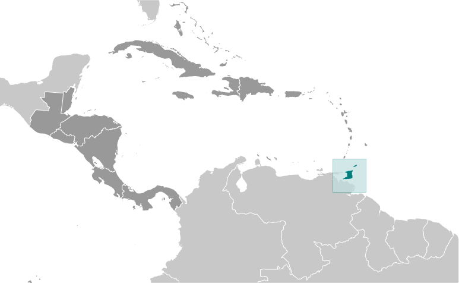
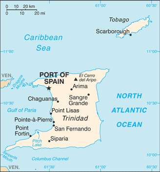
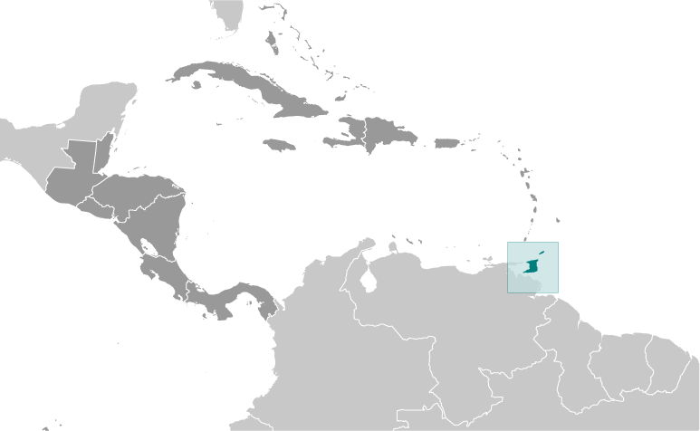
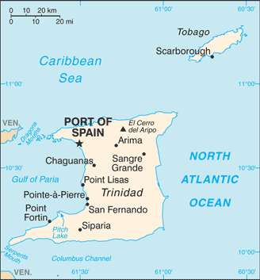

Central America and Caribbean :: TRINIDAD AND TOBAGO
Introduction :: TRINIDAD AND TOBAGO
-
First colonized by the Spanish, the islands came under British control in the early 19th century. The islands' sugar industry was hurt by the emancipation of the slaves in 1834. Manpower was replaced with the importation of contract laborers from India between 1845 and 1917, which boosted sugar production as well as the cocoa industry. The discovery of oil on Trinidad in 1910 added another important export. Independence was attained in 1962. The country is one of the most prosperous in the Caribbean thanks largely to petroleum and natural gas production and processing. Tourism, mostly in Tobago, is targeted for expansion and is growing. The government is coping with a rise in violent crime.
Geography :: TRINIDAD AND TOBAGO
-
Caribbean, islands between the Caribbean Sea and the North Atlantic Ocean, northeast of Venezuela11 00 N, 61 00 WCentral America and the Caribbeantotal: 5,128 sq kmland: 5,128 sq kmwater: 0 sq kmcountry comparison to the world: 174slightly smaller than Delaware0 km362 kmmeasured from claimed archipelagic baselinesterritorial sea: 12 nmcontiguous zone: 24 nmexclusive economic zone: 200 nmcontinental shelf: 200 nm or to the outer edge of the continental margintropical; rainy season (June to December)mostly plains with some hills and low mountainslowest point: Caribbean Sea 0 mhighest point: El Cerro del Aripo 940 mpetroleum, natural gas, asphaltagricultural land: 10.6%arable land 4.9%; permanent crops 4.3%; permanent pasture 1.4%forest: 44%other: 45.4% (2011 est.)36 sq km (2003)3.84 cu km (2011)total: 0.23 cu km/yr (67%/25%/8%)per capita: 177.9 cu m/yr (2005)outside usual path of hurricanes and other tropical stormswater pollution from agricultural chemicals, industrial wastes, and raw sewage; oil pollution of beaches; deforestation; soil erosionparty to: Biodiversity, Climate Change, Climate Change-Kyoto Protocol, Desertification, Endangered Species, Hazardous Wastes, Law of the Sea, Marine Dumping, Marine Life Conservation, Ozone Layer Protection, Ship Pollution, Tropical Timber 83, Tropical Timber 94, Wetlandssigned, but not ratified: none of the selected agreementsPitch Lake, on Trinidad's southwestern coast, is the world's largest natural reservoir of asphalt
People and Society :: TRINIDAD AND TOBAGO
-
noun: Trinidadian(s), Tobagonian(s)adjective: Trinidadian, TobagonianEast Indian 35.4%, African 34.2%, mixed - other 15.3%, mixed African/East Indian 7.7%, other 1.3%, unspecified 6.2% (2011 est.)English (official), Caribbean Hindustani (a dialect of Hindi), French, Spanish, ChineseProtestant 32.1% (Pentecostal/Evangelical/Full Gospel 12%, Baptist 6.9%, Anglican 5.7%, Seventh-Day Adventist 4.1%, Presbyterian/Congretational 2.5, other Protestant .9), Roman Catholic 21.6%, Hindu 18.2%, Muslim 5%, Jehovah's Witness 1.5%, other 8.4%, none 2.2%, unspecified 11.1% (2011 est.)1,222,363 (July 2015 est.)country comparison to the world: 1600-14 years: 19.41% (male 120,876/female 116,336)15-24 years: 12.59% (male 79,949/female 73,888)25-54 years: 46.59% (male 295,970/female 273,481)55-64 years: 11.59% (male 70,466/female 71,196)65 years and over: 9.83% (male 52,199/female 68,002) (2015 est.)total dependency ratio: 43.2%youth dependency ratio: 29.8%elderly dependency ratio: 13.5%potential support ratio: 7.4% (2015 est.)total: 35 yearsmale: 34.5 yearsfemale: 35.5 years (2015 est.)-0.13% (2015 est.)country comparison to the world: 20813.46 births/1,000 population (2015 est.)country comparison to the world: 1488.56 deaths/1,000 population (2015 est.)country comparison to the world: 75-6.25 migrant(s)/1,000 population (2015 est.)country comparison to the world: 199urban population: 8.4% of total population (2015)rate of urbanization: -1.2% annual rate of change (2010-15 est.)PORT-OF-SPAIN (capital) 34,000 (2014)at birth: 1.03 male(s)/female0-14 years: 1.04 male(s)/female15-24 years: 1.08 male(s)/female25-54 years: 1.08 male(s)/female55-64 years: 0.99 male(s)/female65 years and over: 0.77 male(s)/femaletotal population: 1.03 male(s)/female (2015 est.)63 deaths/100,000 live births (2015 est.)country comparison to the world: 112total: 23.9 deaths/1,000 live birthsmale: 25.11 deaths/1,000 live birthsfemale: 22.66 deaths/1,000 live births (2015 est.)country comparison to the world: 72total population: 72.59 yearsmale: 69.69 yearsfemale: 75.56 years (2015 est.)country comparison to the world: 1381.71 children born/woman (2015 est.)country comparison to the world: 17142.5% (2006)5.5% of GDP (2013)country comparison to the world: 1311.18 physicians/1,000 population (2007)2.7 beds/1,000 population (2012)improved:urban: 95.1% of populationrural: 95.1% of populationtotal: 95.1% of populationunimproved:urban: 4.9% of populationrural: 4.9% of populationtotal: 4.9% of population (2015 est.)improved:urban: 91.5% of populationrural: 91.5% of populationtotal: 91.5% of populationunimproved:urban: 8.5% of populationrural: 8.5% of populationtotal: 8.5% of population (2015 est.)1.65% (2013 est.)country comparison to the world: 3014,000 (2013 est.)country comparison to the world: 90700 (2013 est.)country comparison to the world: 7432.3% (2014)country comparison to the world: 31definition: age 15 and over can read and writetotal population: 99%male: 99.2%female: 98.7% (2015 est.)total number: 1,201percentage: 1% (2006 est.)total: 9.2%male: 7.7%female: 11.4% (2013 est.)country comparison to the world: 98
Government :: TRINIDAD AND TOBAGO
-
conventional long form: Republic of Trinidad and Tobagoconventional short form: Trinidad and Tobagoparliamentary democracyname: Port of Spaingeographic coordinates: 10 39 N, 61 31 Wtime difference: UTC-4 (1 hour ahead of Washington, DC, during Standard Time)9 regions, 3 boroughs, 2 cities, 1 wardregions: Couva/Tabaquite/Talparo, Diego Martin, Mayaro/Rio Claro, Penal/Debe, Princes Town, Sangre Grande, San Juan/Laventille, Siparia, Tunapuna/Piarcoborough: Arima, Chaguanas, Point Fortincities: Port of Spain, San Fernandoward: Tobago31 August 1962 (from the UK)Independence Day, 31 August (1962)previous 1962; latest 1976; amended many times, last in 2007 (2015)English common law; judicial review of legislative acts in the Supreme Courthas not submitted an ICJ jurisdiction declaration; accepts ICCt jurisdictioncitizenship by birth: yescitizenship by descent: yesdual citizenship recognized: yesresidency requirement for naturalization: 8 years18 years of age; universalchief of state: President Anthony CARMONA (since 18 March 2013)head of government: Prime Minister Keith ROWLEY (since 9 September 2015)cabinet: Cabinet appointed from among members of Parliamentelections/appointments: president indirectly elected by an electoral college of selected Senate and House of Representatives members for a 5-year term (eligible for a second term); election last held on 15 February 2013 (next to be held by February 2018); the president usually appoints the leader of the majority party in the House of Representatives as prime ministerelection results: Anthony CARMONA (independent) elected president; electoral college vote - 100%description: bicameral Parliament consists of the Senate (31 seats; 16 members appointed by the ruling party, 9 by the president, and 6 by the opposition party; members serve 5-year terms;) and the House of Representatives (41 seats; members directly elected in single-seat constituencies by simple majority vote to serve 5-year terms)note: Tobago has a unicameral House of Assembly (16 seats; 12 assemblymen directly elected by simple majority vote and 4 appointed councillors - 3 on the advice of the chief secretary and 1 on the advice of the minority leader; members serve 4-year terms)elections: House of Representatives - last held on 7 September 2015 (next to be held in 2020)election results: House of Representatives - percent of vote - NA; seats by party - PNM 23, UNC 18highest resident court(s): Supreme Court of the Judicature (consists of a chief justice for both the Court of Appeal with 12 judges and the High Court with 24 judges); note - Trinidad and Tobago can file appeals beyond its Supreme Court to the Caribbean Court of Justice, with final appeal to the Judicial Committee of the Privy Council (in London)judge selection and term of office: Supreme Court chief justice appointed by the president after consultation with the prime minister and the parliamentary leader of the opposition; other judges appointed by the Judicial Legal Services Commission, headed by the chief justice and 5 members with judicial experience; all judges appointed for life with mandatory retirement normally at age 65subordinate courts: Courts of Summary Criminal Jurisdiction; Petty Civil Courts; Family CourtCongress of the People or COP [Prakash RAMADHAR]Democratic Action Congress or DAC [Hochoy CHARLES] (only active in Tobago)Democratic National Alliance or DNA [Charles CARSON] (coalition of NAR, DDPT, MND)Movement for National Development or MND [Garvin NICHOLAS]National Alliance for Reconstruction or NAR [Lennox SANKERSINGH]People's National Movement or PNM [Keith ROWLEY]Tobago Organization of the People or TOP [Ashworth JACK]United National Congress or UNC [Kamla PERSAD-BISSESSAR]Jamaat-al Muslimeen [Yasin ABU BAKR]ACP, AOSIS, C, Caricom, CDB, CELAC, EITI (compliant country), FAO, G-24, G-77, IADB, IAEA, IBRD, ICAO, ICC (NGOs), ICCt, ICRM, IDA, IFAD, IFC, IFRCS, IHO, ILO, IMF, IMO, Interpol, IOC, IOM, IPU, ISO, ITSO, ITU, ITUC (NGOs), LAES, MIGA, NAM, OAS, OPANAL, OPCW, Pacific Alliance (observer), Paris Club (associate), UN, UNCTAD, UNESCO, UNIDO, UPU, WCO, WFTU (NGOs), WHO, WIPO, WMO, WTOchief of mission: Ambassador (vacant); Charge d'Affaires Colin MIchael CONNELLY (since 15 August 2015chancery: 1708 Massachusetts Avenue NW, Washington, DC 20036telephone: [1] (202) 467-6490FAX: [1] (202) 785-3130consulate(s) general: Miami, New Yorkchief of mission: Ambassador (vacant); Charge d'Affaires Margaret B. DIOP (since October 2012)embassy: 15 Queen's Park West, Port of Spainmailing address: P. O. Box 752, Port of Spaintelephone: [1] (868) 622-6371 through 6376FAX: [1] (868) 822-5905red with a white-edged black diagonal band from the upper hoist side to the lower fly side; the colors represent the elements of earth, water, and fire; black stands for the wealth of the land and the dedication of the people; white symbolizes the sea surrounding the islands, the purity of the country's aspirations, and equality; red symbolizes the warmth and energy of the sun, the vitality of the land, and the courage and friendliness of its peoplescarlet ibis (bird of Trinidad), cocrico (bird of Tobago), Chaconia flower; national colors: red, white, blackname: "Forged From the Love of Liberty"lyrics/music: Patrick Stanislaus CASTAGNEnote: adopted 1962; song originally created to serve as an anthem for the West Indies Federation; adopted by Trinidad and Tobago following the Federation's dissolution in 1962
Economy :: TRINIDAD AND TOBAGO
-
Trinidad and Tobago attracts considerable foreign direct investment, particularly in energy, and has one of the highest per capita incomes in Latin America and the Caribbean. Trinidad and Tobago is the leading Caribbean producer of oil and gas, and its economy is heavily dependent upon these resources. It also supplies manufactured goods, notably food products and beverages, as well as cement to the Caribbean region. Oil and gas account for about 40% of GDP and 80% of exports but only 5% of employment.Growth has been fueled by investments in liquefied natural gas, petrochemicals, and steel with additional upstream and downstream investment planned. Oil production has declined over the last decade as the country focused the majority of its efforts on natural gas. Economic growth between 2000 and 2007 averaged slightly over 8% per year, significantly above the regional average of about 3.7% for that same period; however, GDP slowed down since then and contracted during 2009-12 due to depressed natural gas prices and changing markets. The current administration has been working to arrest this decline by opening bid rounds and providing fiscal incentives for investments in on-shore and deep water acreage to boost oil reserves and production. The government keeps a close watch on the changing global gas markets and has shown flexibility in diversifying natural gas export destinations. The economy benefits from a growing trade surplus with the US. The US is Trinidad and Tobago's leading trade partner.Although Trinidad and Tobago enjoys cheap electricity from natural gas, the renewable energy sector has recently garnered increased interest. The country is also a regional financial center with a well-regulated and stable financial system. Other sectors the Government of Trinidad and Tobago has targeted for increased investment and projected growth include tourism, agriculture, information and communications technology, and shipping.The previous MANNING administration benefited from fiscal surpluses fueled by the dynamic export sector; however, declines in oil and gas prices have reduced government revenues, challenging the current government's commitment to maintaining high levels of public investment. Crime and bureaucratic hurdles continue to be the biggest deterrents for attracting more foreign direct investment and business.$43.46 billion (2014 est.)$43.11 billion (2013 est.)$42.37 billion (2012 est.)note: data are in 2014 US dollarscountry comparison to the world: 111$28.87 billion (2014 est.)0.8% (2014 est.)1.7% (2013 est.)1.4% (2012 est.)country comparison to the world: 184$32,200 (2014 est.)$31,900 (2013 est.)$31,400 (2012 est.)note: data are in 2014 US dollarscountry comparison to the world: 5518.5% of GDP (2014 est.)20.9% of GDP (2013 est.)17.2% of GDP (2012 est.)country comparison to the world: 101household consumption: 40.2%government consumption: 12.2%investment in fixed capital: 9.1%investment in inventories: 0.4%exports of goods and services: 67.5%imports of goods and services: -29.4%(2014 est.)agriculture: 0.5%industry: 14.7%services: 84.8% (2014 est.)cocoa, rice, citrus, coffee; sugar; vegetables; poultrypetroleum and petroleum products, liquefied natural gas (LNG), methanol, ammonia, urea, steel products, beverages, food processing, cement, cotton textiles-3% (2014 est.)country comparison to the world: 186623,500 (2014 est.)country comparison to the world: 155agriculture: 3.8%manufacturing, mining, and quarrying: 12.8%construction and utilities: 20.4%services: 62.9% (2007 est.)3.3% (2014 est.)3.7% (2013 est.)country comparison to the world: 2717% (2007 est.)lowest 10%: NA%highest 10%: NA%revenues: $9.106 billionexpenditures: $9.53 billion (2014 est.)31.5% of GDP (2014 est.)country comparison to the world: 83-1.5% of GDP (2014 est.)country comparison to the world: 8139.5% of GDP (2014 est.)39.5% of GDP (2013 est.)country comparison to the world: 1061 October - 30 September7% (2014 est.)5.2% (2013 est.)country comparison to the world: 1944.25% (31 December 2010)7.25% (31 December 2009)country comparison to the world: 907.8% (31 December 2014 est.)7.5% (31 December 2013 est.)country comparison to the world: 113$6.907 billion (31 December 2014 est.)$6.205 billion (31 December 2013 est.)country comparison to the world: 90$17.4 billion (31 December 2014 est.)$15.26 billion (31 December 2013 est.)country comparison to the world: 93$8.431 billion (31 December 2014 est.)$8.214 billion (31 December 2013 est.)country comparison to the world: 108$15.17 billion (31 December 2012 est.)$14.73 billion (31 December 2011)$12.16 billion (31 December 2010 est.)country comparison to the world: 68$1.637 billion (2014 est.)$1.92 billion (2013 est.)country comparison to the world: 41$11.73 billion (2014 est.)$12.77 billion (2013 est.)country comparison to the world: 90petroleum and petroleum products, liquefied natural gas, methanol, ammonia, urea, steel products, beverages, cereal and cereal products, sugar, cocoa, coffee, citrus fruit, vegetables, flowersUS 29.1%, Argentina 9.3%, Brazil 6.6%, Chile 5.9%, Peru 4.5% (2014)$8.904 billion (2014 est.)$8.871 billion (2013 est.)country comparison to the world: 108mineral fuels, lubricants, machinery, transportation equipment, manufactured goods, food, chemicals, live animalsUS 34.6%, Brazil 7.7%, Gabon 6.2%, China 6.1%, Russia 5%, Canada 4.1% (2014)$11.69 billion (31 December 2015 est.)$11.98 billion (31 December 2014 est.)country comparison to the world: 72$4.879 billion (31 December 2014 est.)$4.676 billion (31 December 2013 est.)country comparison to the world: 131$102 billion (31 December 2008 est.)$12.44 billion (2007)country comparison to the world: 42$3.829 billion (2007)country comparison to the world: 70Trinidad and Tobago dollars (TTD) per US dollar -6.4041 (2014 est.)6.4041 (2013 est.)6.39 (2012 est.)6.4094 (2011 est.)6.3755 (2010 est.)
Energy :: TRINIDAD AND TOBAGO
-
8.604 billion kWh (2012 est.)country comparison to the world: 1008.365 billion kWh (2012 est.)country comparison to the world: 950 kWh (2013 est.)country comparison to the world: 2010 kWh (2013 est.)country comparison to the world: 2062.104 million kW (2012 est.)country comparison to the world: 10599.8% of total installed capacity (2012 est.)country comparison to the world: 400% of total installed capacity (2012 est.)country comparison to the world: 1860% of total installed capacity (2012 est.)country comparison to the world: 2050.2% of total installed capacity (2012 est.)country comparison to the world: 11381,260 bbl/day (2014 est.)country comparison to the world: 4830,800 bbl/day (2012 est.)country comparison to the world: 5159,180 bbl/day (2012 est.)country comparison to the world: 54728.3 million bbl (1 January 2015 est.)country comparison to the world: 44109,000 bbl/day (2012 est.)country comparison to the world: 7142,000 bbl/day (2013 est.)country comparison to the world: 106111,000 bbl/day (2012 est.)country comparison to the world: 448,823 bbl/day (2012 est.)country comparison to the world: 14042.8 billion cu m (2013 est.)country comparison to the world: 2020.2 billion cu m (2013 est.)country comparison to the world: 3719.8 billion cu m (2013 est.)country comparison to the world: 140 cu m (2013 est.)country comparison to the world: 138371.2 billion cu m (1 January 2014 est.)country comparison to the world: 3751.27 million Mt (2012 est.)country comparison to the world: 58
Communications :: TRINIDAD AND TOBAGO
-
total subscriptions: 290,000subscriptions per 100 inhabitants: 24 (2014 est.)country comparison to the world: 116total: 2 millionsubscriptions per 100 inhabitants: 162 (2014 est.)country comparison to the world: 152general assessment: excellent international service; good local servicedomestic: combined fixed-line and mobile-cellular teledensity roughly 170 telephones per 100 personsinternational: country code - 1-868; submarine cable systems provide connectivity to US and parts of the Caribbean and South America; satellite earth station - 1 Intelsat (Atlantic Ocean); tropospheric scatter to Barbados and Guyana (2011)5 TV networks, one of which is state-owned, broadcast on multiple stations; multiple cable TV subscription service providers; multiple radio networks, one state-owned, broadcast over about 35 stations (2007)AM 2, FM 28, shortwave 0 (2008)6 (2005).tttotal: 779,900percent of population: 63.7% (2014 est.)country comparison to the world: 126
Transportation :: TRINIDAD AND TOBAGO
-
4 (2013)country comparison to the world: 187total: 2over 3,047 m: 12,438 to 3,047 m: 1 (2013)total: 2914 to 1,523 m: 1under 914 m:1 (2013)condensate 257 km; condensate/gas 11 km; gas 1,567 km; oil 587 km (2013)total: 8,320 kmpaved: 4,252 kmunpaved: 4,068 km (2001)country comparison to the world: 140total: 4by type: passenger 1, passenger/cargo 2, petroleum tanker 1registered in other countries: 2 (unknown 2) (2010)country comparison to the world: 131major seaport(s): Point Fortin, Point Lisas, Port of Spain, Scarboroughoil terminals: Galeota Point terminalLNG terminal(s) (export): Port Fortin
Military :: TRINIDAD AND TOBAGO
-
Trinidad and Tobago Defense Force (TTDF): Trinidad and Tobago Army, Coast Guard, Air Guard, Defense Force Reserves (2010)18-25 years of age for voluntary military service (16 years of age with parental consent); no conscription; Trinidad and Tobago citizenship and completion of secondary school required (2012)males age 16-49: 341,764females age 16-49: 317,899 (2010 est.)males age 16-49: 269,824females age 16-49: 261,735 (2010 est.)male: 8,164female: 7,503 (2010 est.)
Transnational Issues :: TRINIDAD AND TOBAGO
-
Barbados and Trinidad and Tobago abide by the April 2006 Permanent Court of Arbitration decision delimiting a maritime boundary and limiting catches of flying fish in Trinidad and Tobago's exclusive economic zone; in 2005, Barbados and Trinidad and Tobago agreed to compulsory international arbitration under United Nations Convention on the Law of the Sea challenging whether the northern limit of Trinidad and Tobago's and Venezuela's maritime boundary extends into Barbadian waters; Guyana has also expressed its intention to include itself in the arbitration as the Trinidad and Tobago-Venezuela maritime boundary may extend into its waters as welltransshipment point for South American drugs destined for the US and Europe; producer of cannabis